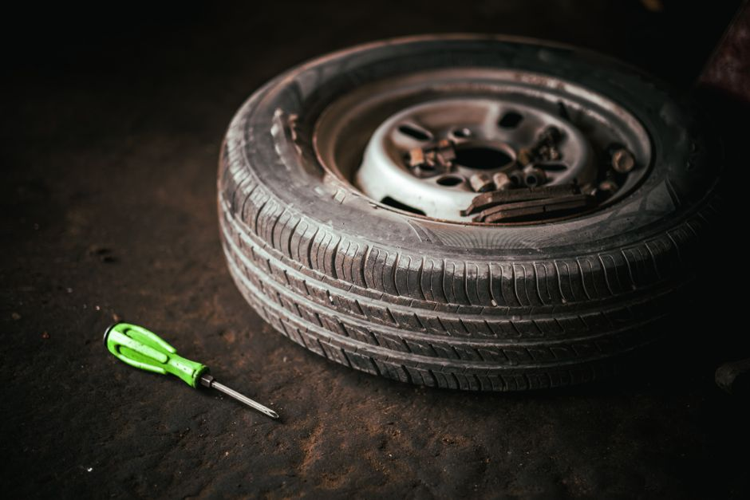
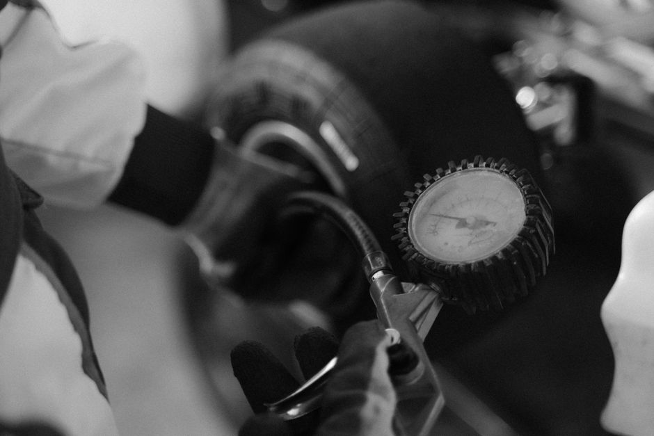
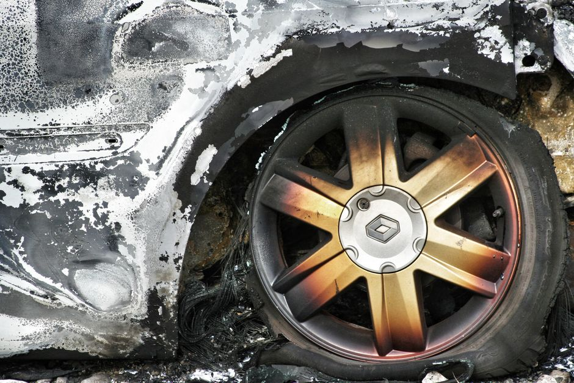

How to Inspect and Maintain Your Tires for Maximum Safety

Photo: Tahamie Farooqui / Pexels
Driving safely starts with properly maintaining your tires. Whether you're a seasoned driver or a new one, understanding how to inspect and maintain your tires is crucial. This guide will walk you through the essential steps to ensure your tires are in top condition, helping you avoid potential accidents and save on fuel. By following these practical tips, you can keep your vehicle running smoothly and safely.
Check Your Tire Pressure Regularly

Photo: Tima Miroshnichenko / Pexels
Tire pressure is one of the most critical factors in tire maintenance. It directly affects your vehicle's performance and safety. The recommended tire pressure for your vehicle can be found on the sticker located on the driver's side doorjamb or in your owner's manual. It’s important to check the pressure at least once a month, or before a long journey.
Practical Example:
Imagine you're going on a road trip to visit family. Before setting off, you check your tire pressure and notice that the front tires are underinflated by 2 psi (about 14 kPa). This small difference can significantly impact your handling and fuel efficiency. After inflating the tires to the recommended pressure, you notice a difference in the car's responsiveness and a slight improvement in fuel economy.
Inspect Your Tires for Wear and Damage

Photo: Sue Rickhuss / Pexels
Checking your tires for wear and damage is another essential part of the maintenance process. You should inspect your tires every time you fill up your gas tank.
Step-by-Step Guide:
- Visual Inspection: Look for obvious signs of damage such as cuts, punctures, or bulges. A tire with a significant bulge should be replaced immediately as it is a sign of structural damage.
- Tread Depth Check: Use a tread depth gauge (the most accurate option) or a penny. Insert the penny with Lincoln’s head upside down into the tread. If you can see the top of his head, the tread is at or below the legal minimum of 2/32 inch (1.6 mm) and the tire must be replaced. Many experts recommend replacing tires earlier, at about 4/32 inch (3 mm), for wet or snowy conditions.
- Check for Uneven Wear: Uneven wear can indicate alignment or suspension issues. If you notice significant wear on one side of the tire, it’s a sign that your vehicle needs an alignment.
Concrete Scenario:
Suppose you notice that one of your front tires is worn more on its inner or outer edge than on the rest of the tread. This can point to an alignment problem, so have a technician check it. If both edges are worn more than the center, the tire is probably underinflated; if the center is worn more, it is probably overinflated.
Rotate Your Tires Every 5,000 Miles
Regular tire rotation is crucial to ensure even wear and extend the life of your tires. You should rotate your tires every 5,000 miles (about 8,000 km), or sooner if you notice uneven wear. This involves moving the tires to different positions on the vehicle to distribute the wear evenly.
Practical Advice:
The right rotation pattern depends on your vehicle (front-, rear- or all-wheel drive) and on your tires (some are directional, or sized differently front and rear). Check your owner’s manual or ask a tire technician which pattern to use.
Example:
If you’ve driven 4,500 miles and notice that your front tires are more worn on the outer edges, it’s time to rotate them. By rotating the tires, you can prevent excessive wear and ensure that all tires wear evenly, extending the overall lifespan of your tires.
Balance Your Tires When Needed
Balancing your tires ensures that the weight is evenly distributed, which helps to reduce vibration and maintain smooth driving. Have your tires balanced whenever you install new tires or after a repair, and as soon as you notice vibration in the steering wheel or seats while driving.
Practical Example:
Imagine you’ve been driving for 9,500 miles and notice a noticeable vibration in the steering wheel, especially at higher speeds. This could be a sign that your tires need balancing. After having the tires balanced, the vibration is significantly reduced, providing a much smoother ride.
Store Your Tires Properly During Winter
If you switch between summer and winter tires, store the set you are not using in a cool, dry place away from direct sunlight, heat and chemicals. Clean the tires first and mark each tire’s position.
Concrete Scenario:
Store them in the garage on a clean floor, with a piece of cardboard or a mat underneath. Tires without rims can stand upright; tires mounted on rims are better stacked or hung. Check them from time to time for moisture or damage.
Conclusion
Proper tire maintenance is essential for both safety and fuel efficiency. By following these steps, you can ensure that your tires are in the best possible condition, providing a safe and comfortable ride. Remember to check your tire pressure monthly, inspect for wear and damage, rotate your tires every 5,000 miles (about 8,000 km), have them balanced when needed, and store them properly when you switch seasons. These simple yet effective steps can save you money and ensure your safety on the road. If you are unsure about tread depth, damage or alignment, have a qualified tire technician inspect your tires.
Recommended products
As an Amazon Associate, I earn from qualifying purchases.